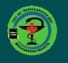

Адрес: г.Переславль-Залесский, ул.Свободы, д.42а
Email: zrb@pereslavl.ru
Телефоны: 8 (48535) 6-64-00; 3-23-19
Адрес: г.Переславль‑Залесский, ул.Свободы,‑д.42а
Email: zrb@pereslavl.ru
Телефон: 8 (48535) 6‑64‑00; 3‑23‑19
Записаться на прием к врачу-специалисту можно любым удобным для пациента способом, а именно через:
Сроки обеспечения рецептов утверждены приказом Министерством здравоохранения Российской Федерации от 11 июля 2017 № 403н «Об утверждении правил отпуска лекарственных препаратов для медицинского применения, в том числе иммунобиологических лекарственных препаратов, аптечными организациями, индивидуальными предпринимателями, имеющими лицензию на фармацевтическую деятельность».
В случае отсутствия у субъекта розничной торговли лекарственного препарата, указанного в рецепте, при обращении лица к субъекту розничной торговли рецепт принимается на обслуживание в следующие сроки (далее - отсроченное обслуживание):
Прикрепление застрахованных лиц к медицинской организации, оказывающей первичную медико-санитарную помощь, регламентировано приказом Минздравсоцразвития России от 26.04.2012 № 406н «Об утверждении Порядка выбора гражданином медицинской организации при оказании ему медицинской помощи в рамках программы государственных гарантий бесплатного оказания гражданам медицинской помощи» и приказом Минздрава России от 21.12.2012 № 1342н «Об утверждении Порядка выбора гражданином медицинской организации (за исключением случаев оказания скорой медицинской помощи) за пределами территории субъекта Российской Федерации, в котором проживает гражданин, при оказании ему медицинской помощи в рамках программы государственных гарантий бесплатного оказания медицинской помощи».
Для получения первичной медико-санитарной помощи Вы можете выбирать медицинскую организацию, в том числе по территориально-участковому принципу, не чаще чем один раз в год (за исключением случаев изменения места жительства или места пребывания гражданина). Для прикрепления Вам или Вашему законному представителю необходимо обратиться в выбранную медицинскую организацию с письменным заявлением. При подаче заявления предъявляются оригиналы паспорта гражданина Российской Федерации, полис обязательного медицинского страхования. Открепление от амбулаторно-поликлинического медицинского учреждения, где ранее гражданин был прикреплен, является прерогативой лечебного учреждения, к которому гражданин прикрепляется.